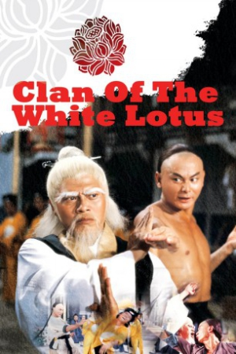

Also known as:Clan of the White Lotus (original title)
Country:Hong Kong, 95 minutes
Spoken languages:Mandarin
Genres:Action
Director(s):Lo Lieh
Writer(s):Tien Huang
Video Codec:Unknown
Number: 2394


Certification:
Storyline:
Shaolin practitioners and brothers Wu and Hung kill the merciless Pai Mei. However, Pai Mei's even more merciless brother White Lotus takes revenge; killing most of the Shaolin disciples, including Wu and Hung's girlfriend, leaving only Wu's pregnant wife and Hung as the only remaining practitioners of Shaolin left to avenge the deaths. But Hung's kung-fu will not be powerful enough so he must learn feminine kung-fu techniques to help him try and defeat White Lotus.
Cast:


Medium: Original DVD,
Loaned: No
Aspect ratio: Unknown